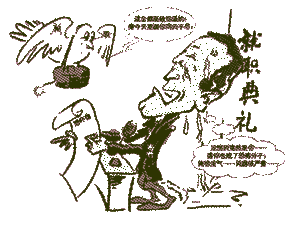

jenifer aniston's friends.
???? ??? ????? ????? ?????? ????? ???? ???? ????? ???? ????? ??????? ???? ?? ????? ???????? ?????
????? ???? ???? ???[????? ?? ???? ??? ??????? ????[????? ???? ??????? ????????? friends
friends 